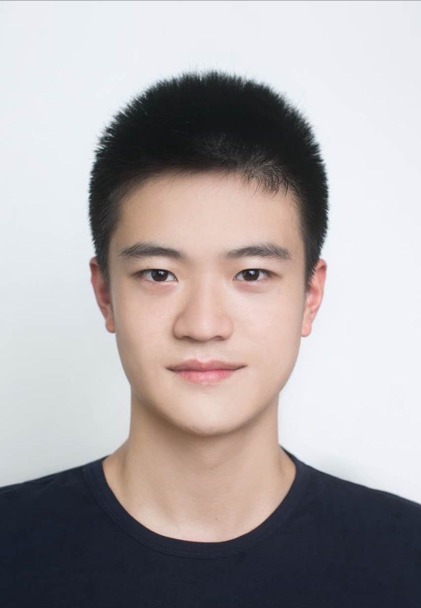

Haixin Wang (汪海昕)
|  | Master Student, National Engineering Research Center for Software Engineering, Peking University, No. 5 Yiheyuan Road, Beijing, China
E-mail: wang.hx@stu.pku.edu.cn |
About me
I received the B.S. degree from the University of Science and Technology Beijng, in 2021. Currently, I'm a second year master student in Peking University. My main research interests include machine learning, and computer vision, such as representation learning, challenging image retrieval, image processing, and multi-modal prompt learning. Also, I do some research about data mining, such as physical simulation, and graph mining. Recently, I focus on the area of AI for science.
Research
My research interests include:
AI for Science: Fluid Dynamic Simulation, PDE Foundation Model
Typical AI Tasks: Computer Vision, Data Mining
Current work
Multi-modal prompt learning
Physical simulation & design
Real-world image retrieval
Academic publications
Wang, H., Sun, J., Zhang, S., Xiang, W., Chen, C., Hua, X. S., and Luo, X. "DANCE: Learning A Domain Adaptive Framework for Deep Hashing.", Proceedings of the ACM Web Conference 2023, 2023. (CCF Rank A)
Wang, H., Sun, J., Luo, X., Xiang, W., Zhang, S., Chen, C., and Hua, X. S. "Towards Effective Domain Adaptive Retrieval.", IEEE Transactions on Image Processing (TIP), 2023. (CCF Rank A)
Sun, J.*, Wang, H.*, Luo, X., Zhang, S., Xiang, W., Chen, C., and Hua, X. S. "HEART: Towards Effective Hash Codes under Label Noise.", ACM Multimedia (ACM MM22), 2022. (* Equal Contribution) (CCF Rank A)
Luo, X., Wang, H., Wu, D., Chen, C., Deng, M., Huang, J., and Hua, X. S. "A Survey on Deep Hashing methods.", ACM Transactions on Knowledge Discovery from Data (TKDD), 2022. (CCF Rank B)
Wang, H., Zhang, T., Yu, M., Sun, J., Ye, W., Wang, C., and Zhang, S. "Stacking Networks Dynamically for Image Restoration Based on the Plug-and-Play Framework." , European Conference on Computer Vision (ECCV20), 2020. (CCF Rank B)
Full list of publications in Google Scholar.
Academic service
PC Member/Conference Reviewer for AAAI2023, KDD2023, ICCV2023, ACM MM2023, NeurIPS2023
Experience
Tsinghua University (Apr. 2020 - Aug. 2020)
Research Assistant, NetMan AIOps Lab